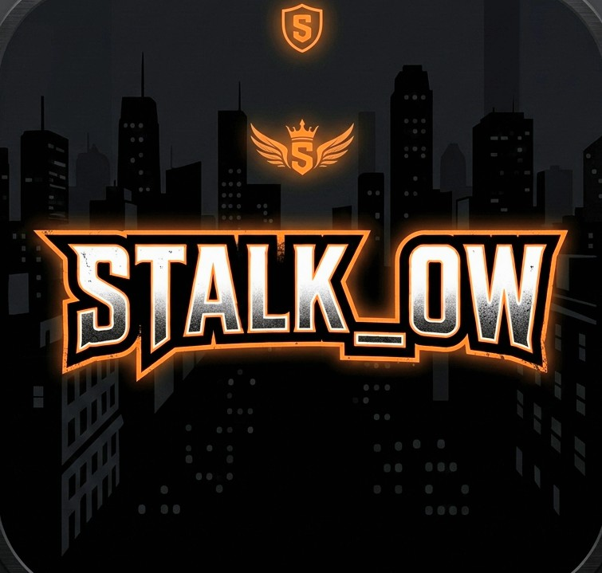

Proyectos Destacados
Explora mis Creaciones
Usa la rueda del ratón para navegar

¡NUEVO JUEGO!STALK_OW
Explora y sobrevive en un entorno urbano interactivo en este juego de simulación y supervivencia cenital. Gestiona tus niveles de salud, hambre y sed, gana dinero, sube de nivel y utiliza tu teléfono móvil integrado para descargar apps clave que te ayudarán a dominar las calles.
v1.0.0 • Simulación / Supervivencia
Jugar
 JUEGO
JUEGO
Cyber Run 2099
Un runner infinito de estética cyberpunk con físicas de gravedad invertida y banda sonora synthwave original.
 APLICACIÓN
APLICACIÓN
NeonSynth Studio
Sintetizador de bolsillo polifónico con secuenciador de 16 pasos y efectos en tiempo real.